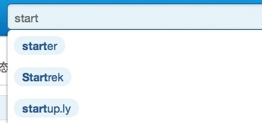
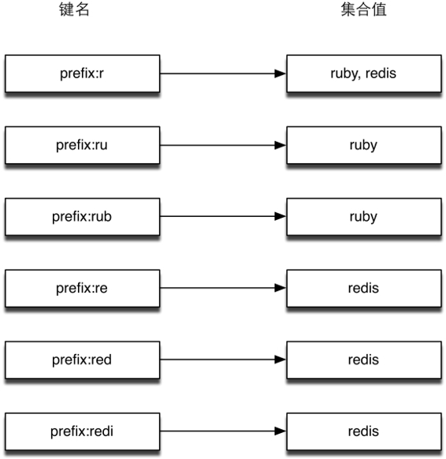
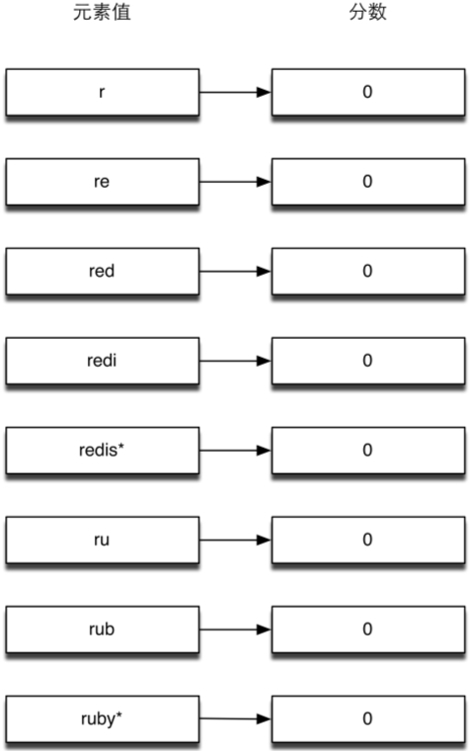

5.2 Ruby与Redis
Redis官方推荐的Ruby客户端是redis-rb[4] ，也是各种语言的Redis客户端中最为稳定的一个。其主要代码贡献者就是Redis的开发者之一Pieter Noordhuis。
使用 gem install redis安装最新版本的redis-rb，目前的最新版本是3.2.0。
创建到Redis的连接很简单：
require 'redis'
redis = Redis.new
该行代码会默认Redis的地址为127.0.0.1，端口为6379。如果需要更改地址或端口，可以使用：
redis = Redis.new(:host => '127.0.0.1', :port => 6379)
redis-rb的官方文档相对比较详细，所以具体的使用方法可以见其GitHub主页。这里从其中挑出几个比较有代表性的命令作为示例：
r.set('redis_db', 'great k / v storage') # => OK
r.get('redis_db') # => "great k / v storage"
r.incrby('counter', 99) # => 99
r.hmset('hash_dt', :key2, 'value2', :key3, 'value3') # => OK
redis-rb最便捷的命令调用方法就是对SET和GET命令使用别名[]，例如：
redis.set('key', 'value')
可以写成
redis['key'] = 'value'
同样
value = redis.get('key')
可以写成
value = redis['key']
另外，对于事务的返回值可以提前设置对结果的引用，就像这样：
redis.multi do
redis.set('key', 'hi')
@value = redis.get('key')
redis.set('key', '2')
@number = redis.incr('key')
end
p @value.value # 输出"hi"
p @number.value # 输出 3
现在很多网站都有标签功能，用户可以给某个项目（如文章、图书等）添加标签，也可以通过标签查询项目。在很多时候，我们都希望在用户输入标签时网站可以自动帮助用户补全要输入的标签，如图5-1所示。

图5-1 输入“start”后网站会列出以“start”开头的标签
这样做一是可以节约用户的输入时间，二是在创建标签时可以起到规范标签的作用，避免用户输入标签时可能出现的拼写错误。
下面介绍两种在Redis中实现补全提示的方法，并会挑选一种用Ruby来实现。
第一种方法：为每个标签的每个前缀都使用一个集合类型键来存储该前缀对应的标签名。如“ruby”的所有前缀分别是“r”“ru”和“rub”，我们为这3个前缀对应的集合类型键都加入元素“ruby”。
当有“ruby”和“redis”两个标签时，Redis中存储的内容如图5-2所示，用户输入“r”时就可以通过读取键“prefix:r”来获知以“r”开头的标签有“ruby”和“redis”两个。

图5-2 “ruby”和“redis”两个标签的索引存储结构
这时就可以将这两个标签提示给用户了。更进一步，我们还可以存储每个标签的访问量，使得我们可以利用SORT命令配合BY参数把最热门的标签排在前面。
第二种方法通过有序集合实现，该方法是由Redis的作者Salvatore Sanfilippo介绍的。
3.6节介绍过有序集合类型有一个特性是当元素的分数一样时会按照元素值的字典顺序排序。利用这一特性只使用一个有序集合类型键就能实现标签的补全功能，准备过程如下。
（1）首先把每个标签名的所有前缀作为元素存入键中，分数均为0。
（2）将每个标签名后面都加上“*”符号并存入键中，分数也为0。
准备过后的存储情况如图5-3所示。

图5-3 “ruby”和“redis”两个标签的索引存储结构
由于所有元素的分数都相同，所以该有序集合键中的项目相当于全部按照字典顺序排序（即图 5-3 所示的顺序）。这样当用户输入“r”时就可以按照如下流程获取要提示给用户的标签。
（1）获取“r”的排名：ZRANK autocomplete r，在这里的返回值是0。
（2）获取“r”之后的N个元素，如当N=100 时：ZRANGE autocomplete 1 101。N的取值与标签的平均长度和需要获得的标签数量有关，可以根据实际情况自由调整。
（3）遍历返回的结果，找出其中以"*"结尾的且以“r”开头的元素。此时将“*”去掉后就是我们需要的结果了。
下面我们写一个小程序来作为示例，程序启动时会从一个文本文件中读取所有标签列表，然后接收用户输入并返回相应的补全结果。
文本文件的样例内容如下：
我的中国心
我的中国话
你好吗
我和你
你一路走来
你从哪里来
当用户输入“我的”时程序会打印如下内容：
我的中国心
我的中国话
具体的实现方法是，首先我们定义一个函数来获得标签的前缀（包括标签加上星号）：
#获得标签的所有前缀
#
# @example
# get_prefixes('word')
# # => ['w', 'wo', 'wor', 'word*']
def get_prefixes(word)
Array.new(word.length) do |i|
if i == word.length - 1
"#{word}*"
else
word[0..i]
end
end
end
接着我们加载redis-rb，并建立到Redis的连接：
require 'redis'
# 建立到默认地址和端口的 Redis 的连接
redis = Redis.new
为了保证可以重复运行此程序，我们需要删除之前建立的键以免影响本次的结果：
redis.del('autocomplete')
下面是准备阶段，程序从words.txt文件读取标签列表，并获得每个标签的前缀加入到有序集合键中：
argv = []
File.open('words.txt').each_line do |word|
get_prefixes(word.chomp).each do |prefix|
argv << [0, prefix]
end
end
redis.zadd('autocomplete', argv)
redis-rb 的 zadd 函数支持两种方式的参数：当只加入一个元素时使用 redis.zadd (key, score, member)，当同时加入多个元素时使用 redis.zadd(key, [[score1,member1], [score2, member2], …])上面的代码使用的是后一种方式。
最后一步我们通过循环来接收用户的输入并查询对应的标签：
while prefix = gets.chomp do
result = []
if (rank = redis.zrank('autocomplete', prefix))
# 存在以用户输入的内容为前缀的标签
redis.zrange('autocomplete', rank + 1, rank + 100).each do |words|
# 获得该前缀后的 100 个元素
if words[-1] == '*' && prefix == words[0..prefix.length - 1]
# 如果以"*"结尾并以用户输入的内容为前缀则加入结果中
result << words[0..-2]
end
end
end
# 打印结果
puts result
end